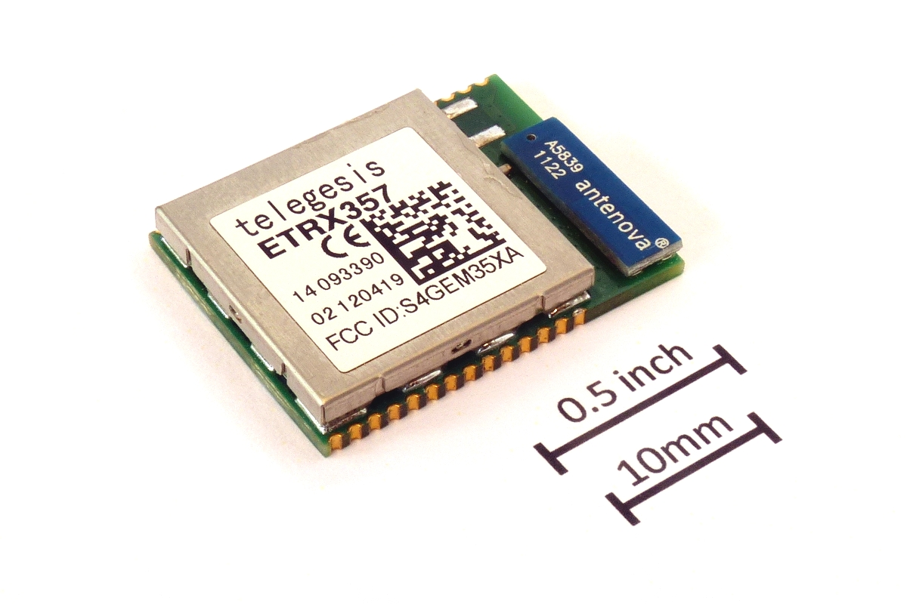
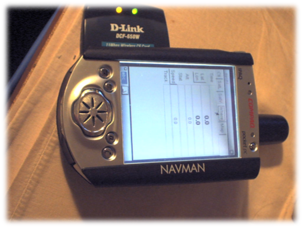
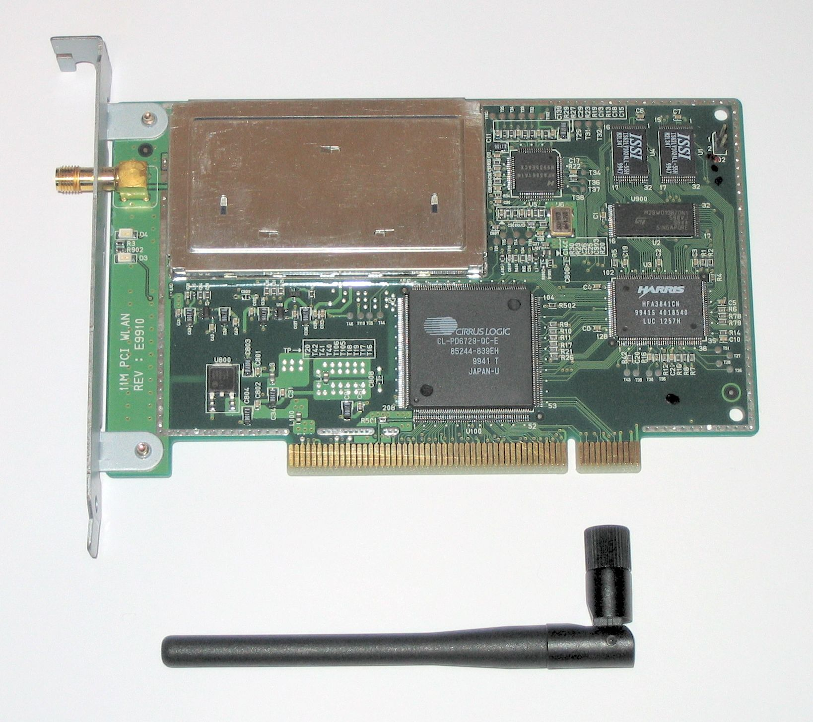
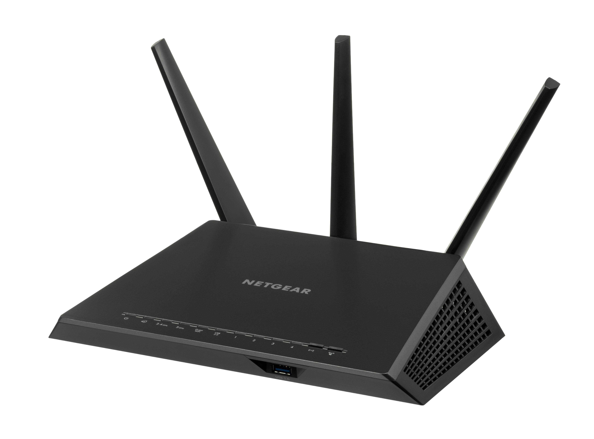
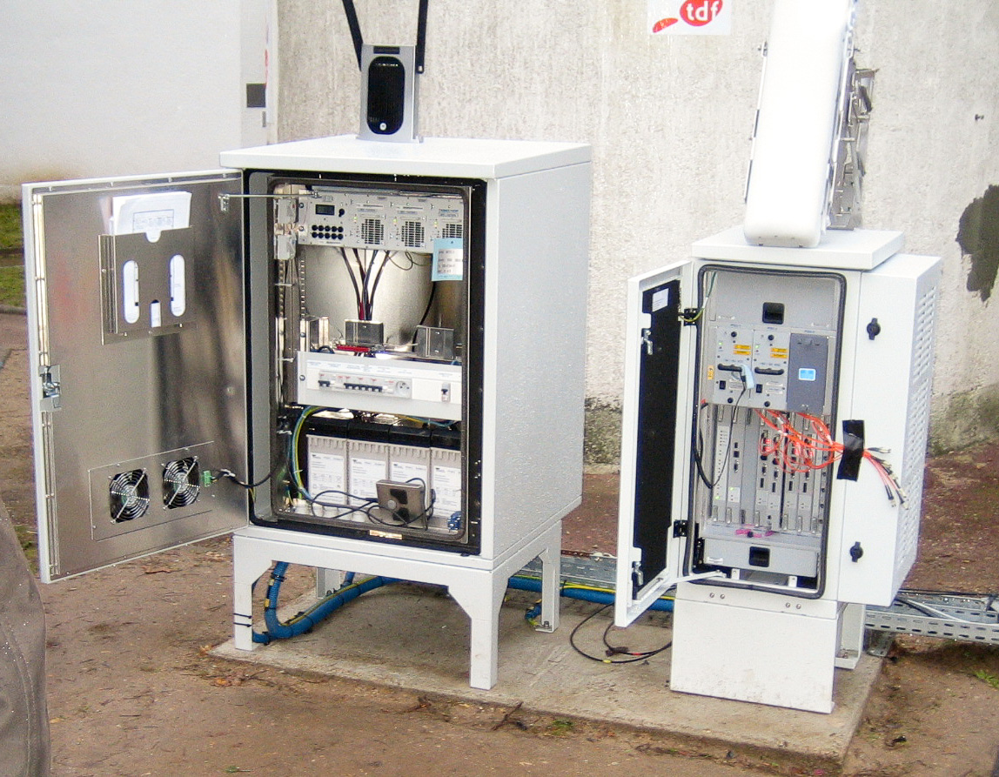
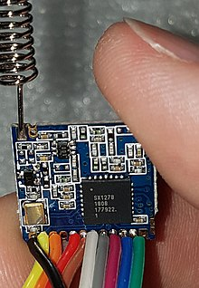

<!-- .slide: class="title-slide" --> # Media transmisyjne: transmisja bezprzewodowa --- ## Plan wykładu - sieci bezprzewodowe i ich infrastruktura, - PAN, WLAN, MAN oraz IoT, - Wi-Fi i rodzina IEEE 802.11, - WiMAX, LoRa i przyszłość standardów. --- <!-- .slide: class="section-slide" --> # Sieci bezprzewodowe --- ## Definicja Bezprzewodowa sieć komputerowa przesyła dane przez fale radiowe lub inne medium bezprzewodowe, zamiast przez przewody między wszystkimi węzłami. Kluczowe elementy: urządzenia końcowe, punkty dostępowe, anteny, kontrolery i łącze do sieci szkieletowej. --- ## Przykładowa infrastruktura WLAN  --- ## Urządzenia infrastruktury <div class="columns"><div> - karta sieciowa lub moduł radiowy, - punkt dostępowy albo router, - antena wewnętrzna lub zewnętrzna, - łącze przewodowe do sieci szkieletowej. </div><div> <img src="media/image2.jpg" alt="Router Wi-Fi" height="360"> </div></div> --- ## Zalety i ograniczenia <div class="columns"><div> **Zalety** - mobilność, - szybkie wdrożenie, - łatwa rozbudowa, - dostęp w miejscach trudnych dla kabli. </div><div> **Ograniczenia** - współdzielone widmo, - zakłócenia i tłumienie, - zasięg zależny od otoczenia, - konieczność właściwego zabezpieczenia. </div></div> --- ## Typy sieci <div class="network-scale"> <div class="pan"><strong>PAN</strong><br>osobista</div> <div class="lan"><strong>LAN / WLAN</strong><br>lokalna</div> <div class="man"><strong>MAN</strong><br>miejska</div> <div class="wan"><strong>WAN</strong><br>rozległa</div> </div> Rosnący zasięg: od urządzeń osobistych po sieci łączące odległe lokalizacje. --- ## Zakresy sieci - szersza perspektywa  --- ## Materiał wideo: rodzaje sieci <iframe class="video-embed" src="https://www.youtube.com/embed/4_zSIXb7tLQ?feature=oembed" title="Rodzaje sieci komputerowych" referrerpolicy="strict-origin-when-cross-origin" allowfullscreen></iframe> --- ## PAN i Internet rzeczy - **Bluetooth:** połączenia osobiste, urządzenia peryferyjne i audio. - **ZigBee / IEEE 802.15.4:** energooszczędne czujniki i automatyka. - **Z-Wave:** domowa automatyka. - **Thread:** sieć mesh dla urządzeń IoT, oparta na IPv6. --- ## Moduły małej mocy dla IoT <div class="columns"><div> Niewielki moduł radiowy może być częścią czujnika, sterownika lub urządzenia noszonego. W takich zastosowaniach ważniejsze od wysokiej przepływności bywają zasięg i zużycie energii. </div><div> <p></p> </div></div> --- ## Bluetooth i Z-Wave <div class="media-gallery"> </div> --- ## Materiał wideo: Internet rzeczy i PAN <iframe class="video-embed" src="https://www.youtube.com/embed/iw9pQeFhN74?feature=oembed" title="Internet rzeczy i PAN" referrerpolicy="strict-origin-when-cross-origin" allowfullscreen></iframe> --- ## Materiał wideo: Wi-Fi a ZigBee <iframe class="video-embed" src="https://www.youtube.com/embed/buV11ZPJ7MQ?feature=oembed" title="Porównanie Wi-Fi i ZigBee" referrerpolicy="strict-origin-when-cross-origin" allowfullscreen></iframe> --- ## Materiał wideo: Z-Wave <iframe class="video-embed" src="https://www.youtube.com/embed/vhzLYmiwNTk?feature=oembed" title="Z-Wave" referrerpolicy="strict-origin-when-cross-origin" allowfullscreen></iframe> --- ## Materiał wideo: Thread <iframe class="video-embed" src="https://www.youtube.com/embed/KElUxj12IIY?feature=oembed" title="Thread" referrerpolicy="strict-origin-when-cross-origin" allowfullscreen></iframe> --- ## WLAN WLAN (*Wireless Local Area Network*) zapewnia lokalny dostęp radiowy. Najczęściej kojarzymy ją z Wi-Fi, czyli implementacjami standardów IEEE 802.11. --- ## Materiał wideo: czym jest WLAN? <iframe class="video-embed" src="https://www.youtube.com/embed/DAR52r0lEtw?feature=oembed" title="WLAN" referrerpolicy="strict-origin-when-cross-origin" allowfullscreen></iframe> --- <!-- .slide: class="section-slide" --> # IEEE 802.11 i Wi-Fi --- ## Pasma Wi-Fi <div class="columns"><div> **2,4 GHz** Dobry zasięg, duże zatłoczenie, szeroka zgodność urządzeń. </div><div> **5 GHz i 6 GHz** Więcej kanałów i większa przepływność; zwykle krótszy zasięg. </div></div> --- ## Kanały w paśmie 2,4 GHz Kanały o szerokości 20 MHz nakładają się. W typowej konfiguracji stosuje się rozdzielone kanały 1, 6 i 11; dostępne kanały zależą od regulacji obowiązujących w danym kraju.  --- ## Sprzęt Wi-Fi - dawniej i dziś <div class="media-gallery"> <p></p> <p></p> <p></p> </div> --- ## Rozwój Wi-Fi: 1997–2024 <div class="wifi-timeline"> <div><strong>IEEE 802.11</strong><br>1997<br>2,4 GHz, do 2 Mb/s</div> <div><strong>Wi-Fi 1</strong><br>802.11b, 1999<br>2,4 GHz, do 11 Mb/s</div> <div><strong>Wi-Fi 2</strong><br>802.11a, 1999<br>5 GHz, do 54 Mb/s</div> <div><strong>Wi-Fi 3</strong><br>802.11g, 2003<br>2,4 GHz, do 54 Mb/s</div> <div><strong>Wi-Fi 4</strong><br>802.11n, 2009<br>MIMO, 2,4/5 GHz</div> <div><strong>Wi-Fi 5</strong><br>802.11ac, 2013<br>większa przepływność w 5 GHz</div> <div><strong>Wi-Fi 6 / 6E</strong><br>802.11ax, 2021<br>OFDMA; 6 GHz w 6E</div> <div><strong>Wi-Fi 7</strong><br>802.11be, 2024<br>320 MHz, Multi-Link Operation</div> </div> --- ## Wybrane standardy IEEE 802.11 <div class="wifi-standard-table"> <div class="head">Standard</div><div class="head">Rok</div><div class="head">Pasmo</div><div class="head">Kanał</div><div class="head rate">Maks. PHY</div> <div>802.11 (legacy)</div><div>1997</div><div>2,4 GHz</div><div>20 MHz</div><div class="rate">2 Mb/s</div> <div>802.11a</div><div>1999</div><div>5 GHz</div><div>20 MHz</div><div class="rate">54 Mb/s</div> <div>802.11b</div><div>1999</div><div>2,4 GHz</div><div>22 MHz</div><div class="rate">11 Mb/s</div> <div>802.11g</div><div>2003</div><div>2,4 GHz</div><div>20 MHz</div><div class="rate">54 Mb/s</div> <div>802.11n</div><div>2009</div><div>2,4 / 5 GHz</div><div>20 / 40 MHz</div><div class="rate">600 Mb/s</div> <div>802.11ad</div><div>2012</div><div>60 GHz</div><div>2160 MHz</div><div class="rate">6,76 Gb/s</div> <div>802.11ac</div><div>2013</div><div>5 GHz</div><div>20–160 MHz</div><div class="rate">6,93 Gb/s</div> <div>802.11ax</div><div>2021</div><div>2,4 / 5 / 6 GHz</div><div>20–160 MHz</div><div class="rate">9,61 Gb/s</div> <div>802.11be</div><div>2024</div><div>2,4 / 5 / 6 GHz</div><div>do 320 MHz</div><div class="rate">do 46 Gb/s</div> </div> <p class="credits">Wartości maksymalne warstwy fizycznej; rzeczywista przepływność zależy od konfiguracji, liczby strumieni i warunków radiowych.</p> --- ## Starsze generacje i zgodność - **802.11b i 802.11g:** pracują w paśmie 2,4 GHz; 802.11g zachowuje zgodność wsteczną z 802.11b. - **802.11a:** wykorzystuje 5 GHz, więc nie współpracuje radiowo z urządzeniami wyłącznie 2,4 GHz. - Historyczne standardy są istotne przy obsłudze starszych urządzeń i planowaniu kompatybilności. --- ## 802.11n, ac i ax - **802.11n:** MIMO, kanały 20/40 MHz. - **802.11ac:** szerokie kanały w 5 GHz i wielostrumieniowość. - **802.11ax:** poprawa wydajności w zatłoczonych środowiskach, OFDMA i planowanie transmisji. --- ## MIMO: kilka anten, kilka strumieni  --- ## MU-MIMO w 802.11ac  --- ## Materiał wideo: 802.11b, g i n <iframe class="video-embed" src="https://www.youtube.com/embed/KysPKUBo1u4?feature=oembed" title="Różne prędkości Wi-Fi" referrerpolicy="strict-origin-when-cross-origin" allowfullscreen></iframe> --- ## Materiał wideo: 802.11n a 802.11ac <iframe class="video-embed" src="https://www.youtube.com/embed/DsWJ-ei5jrc?feature=oembed" title="Różnice między 802.11n i 802.11ac" referrerpolicy="strict-origin-when-cross-origin" allowfullscreen></iframe> --- ## 60 GHz i 802.11ad / ay - Bardzo duża przepływność na krótkim dystansie. - Silne tłumienie i słaba penetracja przeszkód. - Zastosowania: łącza punkt-punkt, dokowanie bezprzewodowe, krótkodystansowe transmisje multimedialne. --- ## WiGig i pasmo 60 GHz  --- ## Materiał wideo: Wi-Fi przy 60 GHz <iframe class="video-embed" src="https://www.youtube.com/embed/zcfuTD3z7aA?feature=oembed" title="Wi-Fi i częstotliwość 60 GHz" referrerpolicy="strict-origin-when-cross-origin" allowfullscreen></iframe> --- ## Materiał wideo: Wi-Fi 6 i OFDMA <iframe class="video-embed" src="https://www.youtube.com/embed/HgIJmdzNyIQ?feature=oembed" title="Wi-Fi 6 i OFDMA" referrerpolicy="strict-origin-when-cross-origin" allowfullscreen></iframe> --- ## Kompatybilność i certyfikacja - Zgodność standardu radiowego nie zawsze oznacza pełną zgodność funkcji urządzeń. - Certyfikat Wi-Fi Alliance ułatwia przewidywalną współpracę produktów. - Planowanie sieci wymaga doboru pasma, kanałów, mocy i zabezpieczeń. --- <!-- .slide: class="section-slide" --> # Sieci miejskie i dalekiego zasięgu --- ## WiMAX - Rodzina IEEE 802.16 dla szerokopasmowych sieci metropolitalnych. - Przeznaczona do dostępu bezprzewodowego na większych obszarach niż WLAN. - Historycznie ważna alternatywa dla dostępu przewodowego, obecnie wyparta w wielu zastosowaniach przez sieci komórkowe. --- ## WiMAX - infrastruktura <div class="columns"><div> WiMAX (*Worldwide Interoperability for Microwave Access*) obejmuje technologie szerokopasmowego dostępu radiowego dla sieci miejskich. Stacje bazowe wykorzystują anteny sektorowe i łącza dosyłowe. </div><div> <p></p> </div></div> --- ## Materiał wideo: WiMAX <iframe class="video-embed" src="https://www.youtube.com/embed/KQdc5AdJqCg?feature=oembed" title="WiMAX" referrerpolicy="strict-origin-when-cross-origin" allowfullscreen></iframe> --- ## LoRa i LoRaWAN - Mała przepływność, daleki zasięg i niskie zużycie energii. - Przeznaczone dla czujników, telemetrii i IoT. - Nie zastępują Wi-Fi: optymalizują inny kompromis między zasięgiem, energią i ilością danych. --- ## LoRa - urządzenie i obszary zastosowań <div class="media-gallery"> <p></p> </div> --- ## Materiał wideo: LoRa <iframe class="video-embed" src="https://www.youtube.com/embed/m6IvwcjcxQc?feature=oembed" title="LoRa" referrerpolicy="strict-origin-when-cross-origin" allowfullscreen></iframe> --- ## Co dalej z IEEE 802? - bardziej efektywne użycie widma, - większa pojemność w gęstych sieciach, - współdziałanie Wi-Fi z sieciami komórkowymi, - rozwój urządzeń IoT i sieci o małej mocy. --- ## Materiał wideo: przyszłość standardów IEEE 802 <video controls preload="metadata"><source src="media/fRnGP41TE2s.mp4" type="video/mp4"></video> --- ## Podsumowanie - Bezprzewodowość daje mobilność, ale wymaga planowania radiowego i zabezpieczeń. - IEEE 802.11 ewoluował od podstawowego WLAN do wielopasmowej, wysokowydajnej infrastruktury. - PAN, WiMAX i LoRa odpowiadają na odmienne potrzeby zasięgu, energii i przepływności.